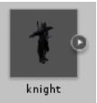
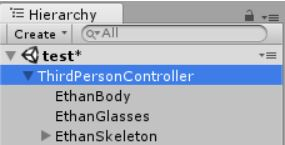
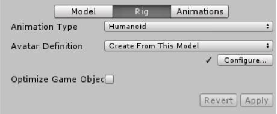
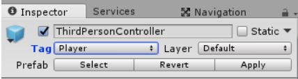
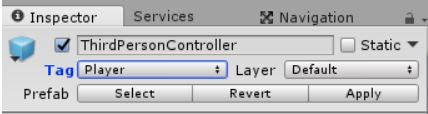

Look for your newly downloaded/imported characters. They will be a new folder in the root of the project - the Assets folder. Your files will be in there. Go find the prefab for your object. It should be a picture of the object with a grey background, probably in a folder called prefabs.

First, click the arrow next to the PlayerController in the Hierarchy to open up its child objects.
The PlayerController is an object that controls all of its child objects. It applies the control settings on it to the model attached to it.

We don’t want any of Ethan’s parts, so go ahead and highlight all three of the Ethan objects and delete them. This is basically the shell of the character. You will need to open the Prefab instance and delete them from there. Then click the back arrow next to PlayerController to exit the Prefab mode.
Now the controller needs a new model to control. Drag the model onto the PlayerController in the hierarchy to make it a child.
Next, we want to make sure that it is setup to use humanoid animations. We are taking the default animations from Ethan, the default character, and using them with this new model. As Ethan is a human, we need to make sure that this model can use humanoid animations. Double-click on your model in the Project View (probably in a folder called models) to open it in the Inspector.
These are the import settings for the model. Click on Rig.

Set Animation Type to Humanoid, and make the avatar from the model.


 
